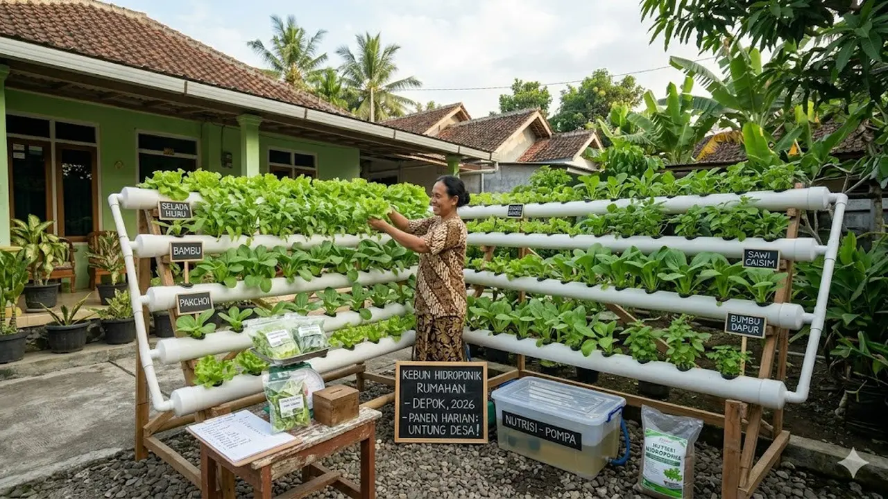

0
Jumlah Anggota
0
Jumlah Program
0
Hari Pelaksanaan
0
Total Kegiatan
Program Unggulan
Inisiatif strategis kami dalam mendorong ketahanan pangan desa.

Instalasi Hidroponik Komunal
Pembangunan sistem hidroponik untuk sayuran bernilai ekonomi tinggi di lahan sempit.
Progress
80%

Pelatihan Pupuk Kompos
Edukasi pembuatan pupuk organik memanfaatkan limbah pertanian setempat.
Progress
100%

Inisiasi Bank Bibit Desa
Pusat pelestarian dan distribusi bibit tanaman pangan lokal berkualitas.
Progress
45%

Digitalisasi UMKM Pangan
Pendampingan branding dan pemasaran digital produk olahan pangan desa.
Progress
20%
Preview Timeline
Jejak langkah dan aktivitas harian kami di desa.
10 Agustus 2026
Proker Utama
Sosialisasi Ketahanan Pangan
12 Agustus 2026
Pelatihan
Praktek Pembuatan Kompos Cair
15 Agustus 2026
Proker Utama
Perakitan Sistem Hidroponik
Gallery Preview
Dokumentasi visual perjalanan dan dedikasi kami.

{kind=link}
{kind=link}
{kind=link}
Mari Bertumbuh Bersama
Dukung dan pantau terus perkembangan program pemberdayaan masyarakat kami menuju ketahanan pangan yang berkelanjutan.
Jelajahi Luaran Proyek